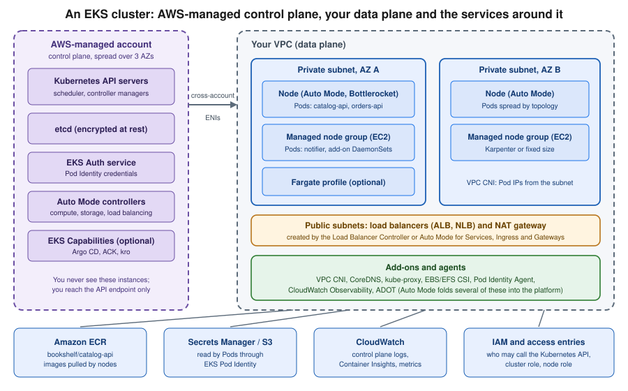
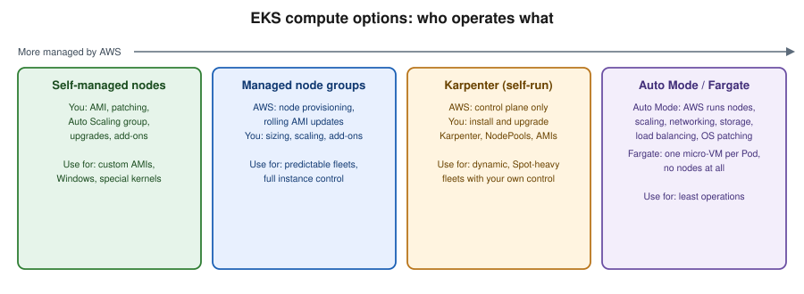

EKS Clusters
|
This content was generated with the assistance of AI and should be verified against the official documentation before being relied on in production. |
This page covers Amazon Elastic Kubernetes Service (EKS) as a managed Kubernetes platform: how a cluster is built, which
compute option to choose, how to create it from the console, eksctl and the AWS CLI, how people and Pods get access,
how the cluster is upgraded and what it costs. Generic Kubernetes concepts (Pods, Deployments, Services, RBAC, probes,
Helm) are not repeated here; they live in the Kubernetes section of this site, and
this page links to the matching pages where EKS adds something specific.
Versions checked against the live documentation on 2026-10-01: EKS offers Kubernetes 1.36 (released on EKS on
2026-06-02), 1.35 and 1.34 in standard support and 1.33, 1.32 and 1.31 in extended support; eksctl is at 0.230;
examples use AWS CLI 2.37 (the CLI v2 line described in Getting Started) and
kubectl within one minor version of the cluster. Re-verify with aws eks describe-cluster-versions and
eksctl version before relying on exact numbers. The Bookshelf cluster bookshelf-eks runs the catalog-api,
orders-api and notifier services; region us-east-1 and account ID 111122223333 are placeholders. Deploying the
Bookshelf workloads, Ingress, the Gateway API and autoscaling of Pods is the subject of
EKS Microservices; this page stops at a healthy, secure, upgradable cluster.
EKS architecture
An EKS cluster has two halves:
-
The control plane (Kubernetes API servers, scheduler, controller managers and the
etcddatabase) runs in an AWS-managed account, is spread over three Availability Zones, is patched and replaced by AWS, and is reached through an API endpoint plus elastic network interfaces (ENIs) that EKS places in two or more of your subnets. -
The data plane (the machines that run your Pods) runs in your account and your VPC. How much of it AWS operates for you depends on the compute option you pick (next section).

Around the cluster sit services you already know from other pages: images come from Amazon ECR (Container Registry), Pods reach AWS APIs with IAM roles (Identity & Access), secrets come from Secrets Manager (Secrets Manager & KMS), traffic enters through Elastic Load Balancing (Load Balancers & Gateways) and the VPC itself is described in VPC Networking.
The same split exists on Azure; see AKS Clusters for the counterpart, and Managed Kubernetes & Distributions for how managed offerings compare.
Compute options

| Option | What AWS operates | What you operate | Typical use |
|---|---|---|---|
EKS Auto Mode |
Nodes (EC2 managed instances running Bottlerocket-based immutable images), compute autoscaling (Karpenter-based), Pod networking and network policy, block storage driver, load balancing integration, node OS patching; nodes are replaced at most every 21 days |
NodePool and NodeClass customisations, workloads, PodDisruptionBudgets that must not block node replacement |
Default for new clusters that want the least operations |
Managed node groups |
Provisioning, registration and rolling replacement of EC2 nodes in an Auto Scaling group |
Node group sizing, AMI/version updates, add-ons, an autoscaler (Karpenter or Cluster Autoscaler) if you want one |
Predictable fleets, full control over instance types and AMIs |
Self-managed nodes |
Nothing beyond the control plane |
AMI, patching, Auto Scaling group, bootstrap, upgrades |
Windows or highly customised hosts, special kernels |
Fargate profiles |
One isolated micro-VM per Pod; no nodes to patch |
Pod sizing; limitations (no DaemonSets, no GPUs, no Pod Identity, no privileged containers) |
Small isolated workloads, bursty batch |
Karpenter (self-installed) |
Control plane only |
Installing and upgrading Karpenter, NodePools, EC2NodeClasses, node AMIs |
Fine-grained, Spot-heavy fleets when Auto Mode’s managed model is too restrictive |
Hybrid Nodes |
Control plane in the Region |
Your own on-premises or edge machines joined to the cluster, networking to the VPC |
Extending one cluster to data centres |
Auto Mode, managed node groups and Fargate can coexist in one cluster, so migration can be gradual. Auto Mode nodes cannot be
reached with SSH or Systems Manager; diagnose them through Kubernetes (kubectl debug, logs, events) instead. Older guides and
tutorials describe only self-managed or managed node groups plus the Cluster Autoscaler and the aws-auth ConfigMap; the
current approach is Auto Mode (or Karpenter) plus access entries.
Official documentation: Manage compute resources by using nodes, EKS Auto Mode, AWS Fargate for EKS.
Auto Mode in practice
With Auto Mode enabled, EKS creates two built-in NodePools, system and general-purpose, and a default NodeClass. You
should not edit them; add your own beside them. A NodePool is a Karpenter resource, so a dedicated pool for Spot capacity
looks like this:
apiVersion: karpenter.sh/v1
kind: NodePool
metadata:
name: bookshelf-spot
spec:
template:
spec:
nodeClassRef:
group: eks.amazonaws.com
kind: NodeClass
name: default
requirements:
- key: karpenter.sh/capacity-type
operator: In
values: ["spot", "on-demand"]
- key: eks.amazonaws.com/instance-category
operator: In
values: ["c", "m"]
expireAfter: 336h
limits:
cpu: "200"Auto Mode reference: Create a NodePool for EKS Auto Mode. Because Auto Mode already contains the load balancing, block storage, Pod networking and compute autoscaling controllers, you do not install the AWS Load Balancer Controller, the EBS CSI driver, Karpenter or the Pod Identity Agent yourself on such a cluster.
Creating a cluster
Every cluster needs a cluster IAM role (trusted by eks.amazonaws.com), at least two subnets in different Availability
Zones, and, for compute, either a node IAM role or Auto Mode’s managed roles. Define the shell variables once:
export AWS_REGION=us-east-1
export ACCOUNT_ID=$(aws sts get-caller-identity --query Account --output text)
export CLUSTER=bookshelf-eksAWS CLI reference: sts get-caller-identity.
In the AWS Management Console
-
Select the Region (for example N. Virginia) in the Region selector at the top right. CloudShell, opened from the console toolbar, already has the AWS CLI and
kubectlif you want to continue from a terminal. -
Open Amazon Elastic Kubernetes Service > Clusters and choose Create cluster.
-
Choose Quick configuration (with EKS Auto Mode) for the shortest path, or Custom configuration to control every setting. Name it
bookshelf-eksand pick the Kubernetes version (the console preselects the newest). -
For the cluster IAM role and node IAM role, choose Create recommended role the first time; the console creates roles with the required AWS managed policies and opens IAM in a new tab.
-
Choose the VPC and at least two private subnets in different Availability Zones. For Cluster endpoint access keep Public and private while learning, and switch to Private once a bastion, VPN or Verified Access path exists.
-
In Cluster access leave Bootstrap cluster administrator access allowed so the creating role can run
kubectl, and keep the authentication mode EKS API (access entries only), the mode Auto Mode requires. -
Choose the Upgrade policy: Standard auto-upgrades at the end of standard support, Extended stays on the version into extended support at extra cost.
-
Optionally enable control plane logs, Prometheus metrics, secrets encryption with a KMS key, and the add-ons you want, then Create. Provisioning takes several minutes; the status moves from Creating to Active.
Console guide: Create an EKS Auto Mode cluster with the console.
With eksctl
eksctl is the official EKS command-line tool; it generates and applies CloudFormation stacks for the VPC, roles and
cluster, so it is the quickest repeatable route. For a new Auto Mode cluster with a fresh VPC:
eksctl create cluster --name $CLUSTER --region $AWS_REGION --enable-auto-modeReference: eksctl EKS Auto Mode and Create an EKS Auto Mode cluster with eksctl.
A declarative file is better for version control. This one creates a managed-node-group cluster with access entries,
the Pod Identity Agent and one Pod Identity association for the notifier service account (the role is created in
EKS Pod Identity):
# bookshelf-eks.yaml
apiVersion: eksctl.io/v1alpha5
kind: ClusterConfig
metadata:
name: bookshelf-eks
region: us-east-1
version: "1.36"
accessConfig:
authenticationMode: API
vpc:
nat:
gateway: Single
addons:
- name: eks-pod-identity-agent
- name: vpc-cni
- name: coredns
- name: kube-proxy
managedNodeGroups:
- name: ng-general
instanceTypes: ["m7i.large", "m6i.large"]
amiFamily: AmazonLinux2023
minSize: 2
maxSize: 6
desiredCapacity: 2
privateNetworking: trueeksctl create cluster -f bookshelf-eks.yamlReference: eksctl — Creating and managing clusters and ClusterConfig schema. Mixing instance types in one managed node group makes EKS apply the smallest Pod limit among them; keep one CPU architecture per group (use separate groups for Graviton). Amazon Linux 2 ended support on 2026-06-30; use Amazon Linux 2023 or Bottlerocket for node images.
With the AWS CLI
The lower-level route shows what eksctl and the console automate. First the two IAM roles for an Auto Mode cluster (the
trust policy for the cluster role must allow sts:TagSession):
{
"Version": "2012-10-17",
"Statement": [
{
"Effect": "Allow",
"Principal": { "Service": "eks.amazonaws.com" },
"Action": [ "sts:AssumeRole", "sts:TagSession" ]
}
]
}aws iam create-role --role-name BookshelfEksClusterRole \
--assume-role-policy-document file://cluster-trust.json
for P in AmazonEKSClusterPolicy AmazonEKSComputePolicy AmazonEKSBlockStoragePolicyV2 \
AmazonEKSLoadBalancingPolicy AmazonEKSNetworkingPolicy; do
aws iam attach-role-policy --role-name BookshelfEksClusterRole \
--policy-arn arn:aws:iam::aws:policy/$P
done
aws iam create-role --role-name BookshelfEksNodeRole \
--assume-role-policy-document file://node-trust.json
for P in AmazonEKSWorkerNodeMinimalPolicy AmazonEC2ContainerRegistryPullOnly; do
aws iam attach-role-policy --role-name BookshelfEksNodeRole \
--policy-arn arn:aws:iam::aws:policy/$P
donenode-trust.json is the same document with ec2.amazonaws.com as the principal and only sts:AssumeRole. References:
iam create-role, iam attach-role-policy, Create an EKS Auto Mode cluster with the AWS CLI.
Then the cluster itself (replace the subnet IDs with your private subnets in two Availability Zones):
aws eks create-cluster --region $AWS_REGION --name $CLUSTER \
--kubernetes-version 1.36 \
--role-arn arn:aws:iam::$ACCOUNT_ID:role/BookshelfEksClusterRole \
--resources-vpc-config '{"subnetIds":["subnet-aaaa1111","subnet-bbbb2222"],"endpointPublicAccess":true,"endpointPrivateAccess":true}' \
--compute-config '{"enabled":true,"nodeRoleArn":"arn:aws:iam::111122223333:role/BookshelfEksNodeRole","nodePools":["general-purpose","system"]}' \
--kubernetes-network-config '{"elasticLoadBalancing":{"enabled":true}}' \
--storage-config '{"blockStorage":{"enabled":true}}' \
--access-config '{"authenticationMode":"API"}'
aws eks wait cluster-active --name $CLUSTER
aws eks describe-cluster --name $CLUSTER --query "cluster.{status:status,version:version,endpoint:endpoint}"The three Auto Mode settings (compute, load balancing and block storage) are enabled together, and the node role cannot be changed after creation. To build a cluster without Auto Mode, omit the three Auto Mode options and add nodes separately (next section). References: eks create-cluster, eks wait cluster-active, eks describe-cluster, Create an Amazon EKS Auto Mode cluster.
The principal that runs these commands needs permissions on EKS and iam:PassRole for the roles it hands to the service. A
scoped policy for a platform engineer who manages only the Bookshelf cluster:
{
"Version": "2012-10-17",
"Statement": [
{
"Sid": "ManageBookshelfCluster",
"Effect": "Allow",
"Action": [
"eks:CreateCluster", "eks:DescribeCluster", "eks:UpdateClusterConfig",
"eks:UpdateClusterVersion", "eks:DeleteCluster", "eks:TagResource",
"eks:CreateNodegroup", "eks:UpdateNodegroupVersion", "eks:UpdateNodegroupConfig",
"eks:DeleteNodegroup", "eks:DescribeNodegroup",
"eks:CreateAddon", "eks:UpdateAddon", "eks:DeleteAddon", "eks:DescribeAddon",
"eks:CreateAccessEntry", "eks:AssociateAccessPolicy", "eks:DescribeAccessEntry",
"eks:CreatePodIdentityAssociation", "eks:DescribePodIdentityAssociation",
"eks:ListInsights", "eks:DescribeInsight", "eks:AccessKubernetesApi"
],
"Resource": [
"arn:aws:eks:us-east-1:111122223333:cluster/bookshelf-eks",
"arn:aws:eks:us-east-1:111122223333:nodegroup/bookshelf-eks/*/*",
"arn:aws:eks:us-east-1:111122223333:addon/bookshelf-eks/*/*",
"arn:aws:eks:us-east-1:111122223333:access-entry/bookshelf-eks/*",
"arn:aws:eks:us-east-1:111122223333:podidentityassociation/bookshelf-eks/*"
]
},
{
"Sid": "PassClusterAndNodeRoles",
"Effect": "Allow",
"Action": "iam:PassRole",
"Resource": [
"arn:aws:iam::111122223333:role/BookshelfEksClusterRole",
"arn:aws:iam::111122223333:role/BookshelfEksNodeRole"
],
"Condition": {
"StringEquals": { "iam:PassedToService": [ "eks.amazonaws.com", "ec2.amazonaws.com" ] }
}
},
{
"Sid": "ListAndDescribeVersions",
"Effect": "Allow",
"Action": [ "eks:ListClusters", "eks:DescribeClusterVersions", "eks:DescribeAddonVersions" ],
"Resource": "*"
}
]
}Reference: Actions, resources and condition keys for Amazon EKS and Identity and access management for Amazon EKS. Creating the clusters with eksctl additionally needs CloudFormation, EC2 and IAM permissions
to build the VPC and roles. The exact set of resource ARN patterns varies slightly between EKS actions, so validate a
policy like this with IAM policy simulator or Access Analyzer before using it in production.
Adding nodes without Auto Mode
For a cluster created without Auto Mode, add a managed node group. The node role needs AmazonEKSWorkerNodePolicy,
AmazonEC2ContainerRegistryPullOnly (or ReadOnly) and, unless the VPC CNI uses its own role, AmazonEKS_CNI_Policy:
aws eks create-nodegroup --cluster-name $CLUSTER --nodegroup-name ng-general \
--node-role arn:aws:iam::$ACCOUNT_ID:role/BookshelfEksNodeRole \
--subnets subnet-aaaa1111 subnet-bbbb2222 \
--ami-type AL2023_x86_64_STANDARD --instance-types m7i.large \
--scaling-config minSize=2,maxSize=6,desiredSize=2 \
--capacity-type ON_DEMAND
aws eks wait nodegroup-active --cluster-name $CLUSTER --nodegroup-name ng-generalReference: eks create-nodegroup and Create a managed node group. Use SPOT capacity with several instance types for interruption-tolerant
workloads. A Fargate profile instead selects Pods by namespace and labels:
aws eks create-fargate-profile --cluster-name $CLUSTER --fargate-profile-name batch \
--pod-execution-role-arn arn:aws:iam::$ACCOUNT_ID:role/BookshelfFargatePodRole \
--subnets subnet-aaaa1111 subnet-bbbb2222 \
--selectors namespace=batchReference: eks create-fargate-profile. Fargate profiles need private subnets, and Fargate Pods get credentials through IAM roles for service accounts, not Pod Identity.
Karpenter without Auto Mode
On clusters that use managed node groups, Karpenter replaces the Cluster Autoscaler: it watches unschedulable Pods and
launches right-sized instances directly. You install it with Helm (its controller needs an IAM role, an SQS queue for
interruption events and a node role), and then define NodePool and EC2NodeClass resources. The NodePool shape is the
one shown in Auto Mode in practice but with nodeClassRef.group: karpenter.k8s.aws and an EC2NodeClass that sets
AMI family, subnets and security-group selectors. Run Karpenter itself on a small managed node group or Fargate so it does
not depend on the nodes it creates. Reference: Karpenter documentation and EKS Best Practices — Karpenter. Autoscaling of Pods (HPA, KEDA) is in
EKS Microservices; the generic mechanics are in
Autoscaling.
Connecting with kubectl
aws eks update-kubeconfig writes a kubeconfig entry that runs aws eks get-token for authentication, so the token is
derived from your current AWS credentials and expires after about 15 minutes; there is no long-lived Kubernetes
credential on disk.
aws eks update-kubeconfig --name $CLUSTER --region $AWS_REGION
kubectl config current-context
kubectl get nodes
kubectl get pods -AReference: eks update-kubeconfig and Connect kubectl to an EKS cluster. On an Auto Mode cluster kubectl get nodes is empty
until the first Pod is scheduled, because nodes are created on demand. In the console, the cluster’s Resources tab lists
workloads without any kubeconfig, using the IAM principal you are signed in as. See
kubectl Essentials for the commands themselves.
Cluster access: access entries
Two separate questions are answered by two systems. Authentication ("which IAM principal is this?") is IAM. Authorization
("what may it do inside Kubernetes?") is Kubernetes RBAC, and EKS can supply it through access entries: an access entry
maps an IAM role or user to either an AWS-managed access policy (a pre-built set of Kubernetes permissions) or to
Kubernetes groups you then bind with your own RBAC objects. Access entries are the recommended mechanism. Older guides use the aws-auth
ConfigMap in kube-system, which is edited by hand, easy to break and can lock everyone out; it is the legacy mode that
remains available on existing clusters only through the API_AND_CONFIG_MAP authentication mode.
| Authentication mode | Behaviour |
|---|---|
|
Access entries only; required by Auto Mode; the recommended default |
|
Both; use it while migrating |
|
Legacy |
You can move a cluster from CONFIG_MAP to API_AND_CONFIG_MAP to API, but not back to a mode that removes the access entry
API. The identity that creates a cluster receives cluster-admin through a bootstrap access entry unless you disable that.
In the AWS Management Console
-
Open the cluster and choose the Access tab. Check Authentication mode; use Manage access to pick an EKS API mode if it is not already one.
-
Under IAM access entries choose Create access entry.
-
Select the IAM principal (a role such as the one assumed through IAM Identity Center) and the type Standard.
-
Add an access policy: for example
AmazonEKSViewPolicyscoped to the namespacebookshelffor developers, orAmazonEKSClusterAdminPolicycluster-wide for platform engineers. Optionally add Kubernetes groups for custom RBAC. -
Choose Create. The principal can run
aws eks update-kubeconfigandkubectlimmediately.
With the AWS CLI
aws eks update-cluster-config --name $CLUSTER --access-config authenticationMode=API
aws eks create-access-entry --cluster-name $CLUSTER \
--principal-arn arn:aws:iam::$ACCOUNT_ID:role/BookshelfDevelopers --type STANDARD
aws eks associate-access-policy --cluster-name $CLUSTER \
--principal-arn arn:aws:iam::$ACCOUNT_ID:role/BookshelfDevelopers \
--policy-arn arn:aws:eks::aws:cluster-access-policy/AmazonEKSEditPolicy \
--access-scope type=namespace,namespaces=bookshelf
aws eks list-associated-access-policies --cluster-name $CLUSTER \
--principal-arn arn:aws:iam::$ACCOUNT_ID:role/BookshelfDevelopersReference: eks create-access-entry, eks associate-access-policy, eks update-cluster-config and Grant IAM users access to Kubernetes with EKS access entries. The built-in access policies are
AmazonEKSClusterAdminPolicy, AmazonEKSAdminPolicy, AmazonEKSEditPolicy and AmazonEKSViewPolicy, and a policy can be scoped
to the whole cluster or to named namespaces. Beyond them, RBAC, Pod Security and admission control are standard Kubernetes; see
Authentication, Authorization & RBAC.
API endpoint exposure
The Kubernetes API endpoint can be public, public restricted to CIDR blocks, public and private, or private only. Private endpoint access means the endpoint resolves to the ENIs in your subnets; reaching it from a workstation then needs a network path into the VPC (a VPN as in VPN & Hybrid Connectivity, Direct Connect or a bastion).
aws eks update-cluster-config --name $CLUSTER \
--resources-vpc-config endpointPublicAccess=true,endpointPrivateAccess=true,publicAccessCidrs=203.0.113.0/24Reference: Cluster API server endpoint. 203.0.113.0/24 is a documentation range; use your office or VPN egress addresses.
Pod credentials: EKS Pod Identity and IRSA
Workloads must never carry long-lived access keys. EKS offers two ways to give a Pod an IAM role:
| EKS Pod Identity | IAM roles for service accounts (IRSA) | |
|---|---|---|
Trust principal |
The single service principal |
A per-cluster OIDC provider registered in IAM; the trust policy names it and the service account |
Binding |
An association created in the EKS API (cluster, namespace, service account, role); nothing is annotated in Kubernetes |
An annotation |
Credential delivery |
The Pod Identity Agent (a DaemonSet on each node, using a link-local address) hands out credentials fetched through the EKS Auth service |
The SDK exchanges a projected service account token with STS using |
Where it works |
Linux EC2 nodes, including Auto Mode (the agent is built in) |
Everywhere, including Fargate and Windows nodes |
Role reuse across clusters |
Same role and trust policy for any cluster |
A trust policy entry per cluster |
Limits |
Up to 5,000 associations per cluster; role must be in the cluster’s account |
Limited by trust policy size and OIDC provider quotas |
Use Pod Identity by default and IRSA where it is unsupported (Fargate, Windows, EKS Anywhere, self-run clusters). Pods that use the default credential provider chain of a current AWS SDK, such as the AWS SDK for Java 2.x used by the Bookshelf services, need no code changes: Pod Identity injects the container credentials environment variables that the chain already reads. Check that the SDK version is one the documentation lists as supporting Pod Identity.
EKS Pod Identity
In the console, open the cluster, choose Add-ons and add Amazon EKS Pod Identity Agent (not needed on Auto Mode), then use the Access tab: under Pod Identity associations choose Create, pick the role, the namespace and the service account. In the CLI the trust policy and association are:
{
"Version": "2012-10-17",
"Statement": [
{
"Sid": "AllowEksAuthToAssumeRoleForPodIdentity",
"Effect": "Allow",
"Principal": { "Service": "pods.eks.amazonaws.com" },
"Action": [ "sts:AssumeRole", "sts:TagSession" ]
}
]
}aws eks create-addon --cluster-name $CLUSTER --addon-name eks-pod-identity-agent
aws iam create-role --role-name BookshelfNotifierRole \
--assume-role-policy-document file://pod-identity-trust.json
aws iam put-role-policy --role-name BookshelfNotifierRole --policy-name notifier-access \
--policy-document file://notifier-policy.json
kubectl create namespace bookshelf
kubectl create serviceaccount notifier -n bookshelf
aws eks create-pod-identity-association --cluster-name $CLUSTER \
--namespace bookshelf --service-account notifier \
--role-arn arn:aws:iam::$ACCOUNT_ID:role/BookshelfNotifierRoleReference: eks create-pod-identity-association, eks create-addon and EKS Pod Identity. The permissions policy for the notifier worker, which reads its SQS queue and sends mail
(see Messaging & Integration and SES Email):
{
"Version": "2012-10-17",
"Statement": [
{
"Sid": "ConsumeNotifierQueue",
"Effect": "Allow",
"Action": [ "sqs:ReceiveMessage", "sqs:DeleteMessage", "sqs:GetQueueAttributes", "sqs:ChangeMessageVisibility" ],
"Resource": "arn:aws:sqs:us-east-1:111122223333:bookshelf-notifier"
},
{
"Sid": "SendConfirmationEmail",
"Effect": "Allow",
"Action": [ "ses:SendEmail" ],
"Resource": "arn:aws:ses:us-east-1:111122223333:identity/example.com",
"Condition": {
"StringEquals": { "ses:FromAddress": "no-reply@example.com" }
}
}
]
}Associations are eventually consistent, so create them during setup rather than in a hot path, and restart Pods that started before the association existed. The role’s trust policy can also use the session tags that Pod Identity adds (cluster name, namespace, service account) to restrict which cluster and namespace may use the role. Generic service accounts and RBAC are in Authentication, Authorization & RBAC; the token exchange as it is used by the Bookshelf workloads is drawn in EKS Microservices.
IRSA
IRSA needs an IAM OIDC provider for the cluster’s issuer URL. With eksctl:
eksctl utils associate-iam-oidc-provider --cluster $CLUSTER --region $AWS_REGION --approve
eksctl create iamserviceaccount --cluster $CLUSTER --namespace batch --name report-job \
--attach-policy-arn arn:aws:iam::$ACCOUNT_ID:policy/BookshelfReportPolicy --approveReference: IAM roles for service accounts and eksctl — IAM service accounts.
Networking
EKS uses the Amazon VPC CNI plugin: each Pod gets a real VPC IP address from the node’s subnet, so Pods are reachable from the rest of the VPC and from peered or connected networks without overlay tunnelling, and Security Groups and flow logs see Pod traffic (see VPC Networking). Practical consequences:
-
IP planning matters. A busy cluster can exhaust subnet addresses. Use roomy private subnets (for example
/19or larger), enable prefix delegation so each node gets/28blocks instead of single addresses, or use custom networking to place Pods in a secondary CIDR. Auto Mode supports secondary CIDRs for Pod addressing. -
Maximum Pods per node depends on the instance type’s ENI limits unless prefix delegation raises it; managed node groups cap it at 110 (fewer than 30 vCPUs) or 250.
-
Security groups for Pods assign a dedicated ENI and security group to selected Pods (needs a supported instance type); enable it in the CNI configuration and select Pods with a
SecurityGroupPolicy. -
Network policy enforcement is built into the VPC CNI (and into Auto Mode); Kubernetes
NetworkPolicyobjects then work, see Network Policies. -
IPv6 clusters give Pods and Services IPv6 addresses (Pods do not use IPv4 NAT); the choice is made at creation and cannot be changed later.
-
Service CIDR (default from
10.100.0.0/16or172.20.0.0/16) can be set at creation only; choose a range that does not overlap with connected networks. -
Public IPv4 addresses and NAT gateways are billed; private subnets with VPC endpoints for ECR, S3 and STS reduce NAT charges.
aws eks update-addon --cluster-name $CLUSTER --addon-name vpc-cni \
--configuration-values '{"env":{"ENABLE_PREFIX_DELEGATION":"true","WARM_PREFIX_TARGET":"1"},"enableNetworkPolicy":"true"}' \
--resolve-conflicts OVERWRITEReference: eks update-addon, Assign more IP addresses with prefixes, Assign security groups to individual Pods and Amazon EKS networking requirements for VPC and subnets. Auto Mode manages these settings itself. Cluster DNS and Services are described in DNS & Service Discovery, and generic CNI concepts in Cluster Networking & CNI. Load balancer provisioning for Services, Ingress and the Gateway API is covered in EKS Microservices.
Add-ons
EKS add-ons are AWS-curated, versioned operational software that EKS installs and updates through the EKS API, with compatibility information per Kubernetes version.
| Add-on name | Purpose | Auto Mode |
|---|---|---|
|
Pod networking, network policy |
Built in |
|
Cluster DNS |
Built in |
|
Service virtual IPs on nodes |
Built in |
|
EBS persistent volumes |
Built in |
|
EFS shared volumes (see Block & File Storage) |
Install yourself |
|
Credential agent for Pod Identity |
Not needed |
|
CloudWatch agent and Fluent Bit for Container Insights |
Install yourself |
|
AWS Distro for OpenTelemetry collector |
Install yourself |
aws eks describe-addon-versions --addon-name aws-efs-csi-driver --kubernetes-version 1.36 \
--query "addons[0].addonVersions[0].addonVersion"
aws eks create-addon --cluster-name $CLUSTER --addon-name amazon-cloudwatch-observability
aws eks list-addons --cluster-name $CLUSTER
aws eks update-addon --cluster-name $CLUSTER --addon-name coredns --addon-version vX.Y.Z-eksbuild.N --resolve-conflicts PRESERVEReference: eks describe-addon-versions, eks list-addons and Amazon EKS add-ons. Replace the placeholder version with one returned by describe-addon-versions. In the
console, use Add-ons > Get more add-ons on the cluster page, which also lists AWS Marketplace add-ons. After a Kubernetes
upgrade, update each add-on to a version compatible with the new cluster version.
EKS Capabilities
EKS Capabilities, announced in November 2025, are managed Kubernetes platform features that run in EKS-owned infrastructure
instead of on your nodes: Argo CD (GitOps continuous delivery), AWS Controllers for Kubernetes (ACK) (manage AWS resources
with Kubernetes custom resources) and kro (compose resources into custom APIs). One capability of each type can be created
per cluster, each uses its own IAM capability role, and Argo CD requires IAM Identity Center for sign-in. Billing is per
capability and per managed resource per hour. Create them from the Capabilities tab of the cluster, with eksctl or with
aws eks create-capability. Argo CD is used for deployment in EKS Microservices; the generic
GitOps workflow is described in GitOps & CI/CD. Reference:
EKS Capabilities and Create an Argo CD capability.
Kubernetes versions and upgrades
A Kubernetes minor version is under standard support for 14 months after it is released on EKS, then under extended
support for another 12 months, 26 months in all. Extended support keeps security patches coming for the control plane and
AWS-published add-ons and AMIs at an additional per-cluster-hour charge (see Pricing). It is the default upgrade policy; set
the policy to STANDARD to be upgraded automatically at the end of standard support instead. After extended support ends,
EKS upgrades the control plane for you at an unannounced time, so plan proactive upgrades.
| Version | EKS release | End of standard support | End of extended support |
|---|---|---|---|
1.36 |
2026-06-02 |
2027-08-02 |
2028-08-02 |
1.35 |
2026-01-27 |
2027-03-27 |
2028-03-27 |
1.34 |
2025-10-02 |
2026-12-02 |
2027-12-02 |
1.33 |
2025-05-29 |
2026-07-29 |
2027-07-29 |
1.32 |
2025-01-23 |
2026-03-23 |
2027-03-23 |
1.31 |
2024-09-26 |
2025-11-26 |
2026-11-26 |
Dates are from the EKS version calendar checked on 2026-10-01; dates for a version in extended support are billed from the beginning of the day standard support ends, in UTC.
aws eks describe-cluster-versions \
--query "clusterVersions[].{version:clusterVersion,status:status,endStandard:endOfStandardSupportDate}"
aws eks update-cluster-config --name $CLUSTER --upgrade-policy supportType=STANDARDUpgrade procedure
EKS upgrades one minor version at a time and the control plane before the data plane. The recommended order:
Upgrade insights are automatic, recurring checks (refreshed every 24 hours) that flag deprecated or removed API usage, add-on incompatibility and similar blockers before you upgrade; rollback readiness insights appear for 7 days after an upgrade.
aws eks list-insights --cluster-name $CLUSTER --filter categories=UPGRADE_READINESS
aws eks describe-insight --cluster-name $CLUSTER --id INSIGHT_ID
aws eks update-cluster-version --name $CLUSTER --kubernetes-version 1.36
aws eks wait cluster-active --name $CLUSTER
aws eks update-nodegroup-version --cluster-name $CLUSTER --nodegroup-name ng-generalReference: eks list-insights, eks update-cluster-version, eks update-nodegroup-version, Cluster insights and Update an existing cluster to a new Kubernetes version. In the console, the Upgrade insights tab of the cluster’s Observability dashboard shows findings, and the cluster overview offers the control plane upgrade.
Key facts to plan around:
-
A cluster upgraded in place can be rolled back to the previous minor version within 7 days of the upgrade completing; clusters auto-upgraded at the end of extended support cannot. See Roll back a cluster to a previous Kubernetes version.
-
Managed node groups and self-managed nodes are not upgraded with the control plane; Kubernetes tolerates nodes up to three minor versions behind the control plane, but running that far behind is not recommended. Managed node groups replace nodes in rolling batches governed by the
maxUnavailableupdate configuration and PodDisruptionBudgets. -
Auto Mode upgrades its nodes itself and replaces every node within 21 days, honouring PodDisruptionBudgets; a PDB that can never be satisfied blocks replacement.
-
Fargate Pods run the control plane’s version only when restarted.
-
Generic Kubernetes upgrade practice, API deprecations and PDBs are in Cluster Setup & Administration, Scheduling & Disruptions and What’s Changed & Migration.
Observability
Control plane logs (api, audit, authenticator, controllerManager, scheduler) are off by default and are sent to a
CloudWatch Logs group /aws/eks/bookshelf-eks/cluster when enabled. Audit logs are especially valuable and have an ingestion cost,
so enable them deliberately and set a retention period.
aws eks update-cluster-config --name $CLUSTER \
--logging '{"clusterLogging":[{"types":["api","audit","authenticator"],"enabled":true}]}'
aws logs put-retention-policy --log-group-name /aws/eks/bookshelf-eks/cluster --retention-in-days 30Reference: Send control plane logs to CloudWatch Logs and logs put-retention-policy.
-
Container Insights (the
amazon-cloudwatch-observabilityadd-on) collects cluster, node and Pod metrics and container logs into CloudWatch; give its service account an IAM role through Pod Identity withCloudWatchAgentServerPolicy. -
Amazon Managed Service for Prometheus can scrape control plane and workload metrics through an agentless, AWS-managed scraper or through your own collector (ADOT or Prometheus remote write), with Amazon Managed Grafana for dashboards. The query language and exporters are covered in the Prometheus section; the workspace setup belongs with Monitoring & Observability.
-
The EKS observability dashboard in the console combines cluster health, upgrade insights, node health and control plane metrics in one place.
-
Node auto repair (managed node groups, Auto Mode) replaces nodes that fail health checks.
-
Generic logging and metrics practice: Observability: Logging & Metrics.
Reference: Monitor your cluster performance and view logs.
Pricing
The cost drivers, without hard-coded prices (check the Amazon EKS pricing page and the AWS Pricing Calculator for current rates in your Region):
-
Cluster control plane: a fixed charge per cluster per hour, priced differently when the cluster runs a version in standard support and when it runs one in extended support (several times higher). Extended support is billed from the day standard support ends, so version hygiene is a direct cost lever. Optional provisioned control plane tiers pre-allocate higher API capacity at an extra hourly price.
-
Compute: EC2 instance charges for managed and self-managed nodes (On-Demand, Spot, Savings Plans and Reserved Instances apply as usual); per-second vCPU and memory charges for Fargate Pods; for Auto Mode, the same EC2 charges plus a per-instance management fee that depends on the instance type and is billed regardless of purchase option.
-
EKS Capabilities: an hourly charge per active capability plus an hourly charge per managed resource.
-
Hybrid Nodes: tiered per vCPU-hour pricing.
-
Everything around the cluster: Elastic Load Balancing, NAT gateways and data transfer, public IPv4 addresses, EBS and EFS storage, CloudWatch Logs ingestion and metrics, Managed Prometheus samples, and ECR storage. These often exceed the control plane fee.
Ways to control cost: one cluster per environment rather than per team where isolation allows it, namespaces and quotas for tenancy, Auto Mode or Karpenter consolidation to remove idle nodes, Spot for interruption-tolerant Pods, Graviton instances, short log retention, and VPC endpoints to cut NAT traffic. See Cost Management & Support for budgets and anomaly detection.
Limits and quotas
Quotas change; the authoritative list is Amazon EKS service quotas. Values mentioned in the documentation consulted for this page:
-
Cluster names: up to 100 characters, unique per account and Region; managed node group names up to 63 characters.
-
At least two subnets in two Availability Zones are required for the cluster.
-
Up to 5,000 Pod Identity associations per cluster.
-
Auto Mode nodes live at most 21 days; the rollback window after an upgrade is 7 days.
-
Managed node groups cap Pods per node at 110 (fewer than 30 vCPUs) or 250 unless you supply your own AMI and
maxPods. -
Service and Pod CIDRs, the authentication mode and IP family are fixed or very hard to change after creation, so decide before creating production clusters.
What older guides get wrong
-
The legacy
aws-authConfigMap is replaced by access entries, and the cluster creator’s hidden admin right is now an explicit, removable bootstrap entry. -
Cluster Autoscaler on managed node groups is superseded by Karpenter and EKS Auto Mode for most new clusters.
-
IRSA with a hand-built OIDC provider is no longer the first choice for EC2 nodes; Pod Identity is simpler.
-
Amazon Linux 2 node images ended support on 2026-06-30; use Amazon Linux 2023 or Bottlerocket.
-
The in-tree EBS volume plugin and the legacy "Kubernetes ingress with ALB" recipes are replaced by the EBS CSI driver, the AWS Load Balancer Controller and the Kubernetes Gateway API (see EKS Microservices).
-
Tutorials from the early EKS years that point to a fixed Kubernetes version, a single extended-support price or
kubectlrun against an unauthenticated endpoint no longer apply; check the version calendar before copying commands. -
AWS Copilot CLI is out of support (2026-06-12); see Infrastructure as Code for current tooling. Containers on AWS without Kubernetes are covered by ECS & Fargate; Choosing a Compute Service compares the options.
Troubleshooting
| Symptom | Likely cause | What to check |
|---|---|---|
|
The IAM principal has no access entry (or no |
|
|
Endpoint is private-only and you have no network path, or |
|
Cluster creation fails with insufficient capacity in an Availability Zone |
One chosen AZ cannot host the control plane ENIs |
Retry with subnets in the Availability Zones named in the error |
Nodes created but stay |
Node role lacks the worker policies, no route to the API endpoint or to ECR, wrong security groups, VPC CNI not installed |
|
Pods |
NodePool limits reached, requirements unsatisfiable, quota on instances |
|
Pods |
Subnet or ENI IP exhaustion |
Free IPs per subnet, enable prefix delegation, use larger subnets or a secondary CIDR |
Pod cannot reach AWS APIs ( |
Missing Pod Identity association, wrong service account name, Pod started before association, agent not installed, SDK too old |
|
Image pull errors ( |
Node role lacks ECR pull permission, no route to ECR or S3, repository in another account without policy |
Node role policies, VPC endpoints, ECR repository policy (see Container Registry) |
Upgrade is blocked or fails |
Upgrade insights errors, deprecated APIs in use, add-on version incompatible, node subnet quota |
|
Auto Mode nodes are not replaced after 21 days |
PodDisruptionBudget or NodePool disruption budget blocks drains |
PDBs with |
Load balancer never appears |
Subnets lack discovery tags, controller or Auto Mode load balancing disabled, IAM permissions |
Subnet tags |
Unexpected extended support charges |
Cluster is on a version past the end of standard support with upgrade policy |
|
References: Troubleshoot problems with Amazon EKS clusters and nodes and Amazon EKS Best Practices Guide. General Pod and node debugging is in Debugging & Troubleshooting.
Clean up
A cluster and its worker infrastructure bill by the hour. Delete in dependency order, and delete Kubernetes-created infrastructure first so that load balancers, security groups and volumes do not block VPC deletion:
kubectl delete ingress,svc,gateway --all -A --ignore-not-found # releases ALBs, NLBs and their ENIs
kubectl delete pvc --all -A # releases EBS volumes (delete namespaces you own first)
aws eks list-pod-identity-associations --cluster-name $CLUSTER --query "associations[].associationId" --output text
aws eks delete-pod-identity-association --cluster-name $CLUSTER --association-id ASSOCIATION_ID
aws eks delete-nodegroup --cluster-name $CLUSTER --nodegroup-name ng-general
aws eks wait nodegroup-deleted --cluster-name $CLUSTER --nodegroup-name ng-general
aws eks delete-addon --cluster-name $CLUSTER --addon-name amazon-cloudwatch-observability
aws eks delete-cluster --name $CLUSTER
aws eks wait cluster-deleted --name $CLUSTER
aws logs delete-log-group --log-group-name /aws/eks/bookshelf-eks/cluster
aws iam detach-role-policy --role-name BookshelfEksNodeRole --policy-arn arn:aws:iam::aws:policy/AmazonEKSWorkerNodeMinimalPolicyRemaining IAM roles (BookshelfEksClusterRole, BookshelfEksNodeRole, BookshelfNotifierRole) are deleted after detaching their policies
with aws iam delete-role. If you used eksctl, one command removes the cluster, node groups and the CloudFormation stacks it created:
eksctl delete cluster --name $CLUSTER --region $AWS_REGION --waitReference: eks delete-cluster, eks delete-nodegroup, Delete a cluster and eksctl cluster management. Also remove ECR images, Managed Prometheus workspaces, EBS snapshots and any leftover NAT gateways or Elastic IP addresses created for the cluster VPC.
Related pages
-
EKS Microservices deploys the Bookshelf workloads on this cluster.
-
ECS & Fargate is the AWS-native container alternative.
-
Orchestration: Swarm & Kubernetes and Kubernetes explain the generic platform.
-
Quarkus on Kubernetes & OpenShift covers packaging a Quarkus service for a cluster.
-
AKS Clusters is the Azure counterpart.